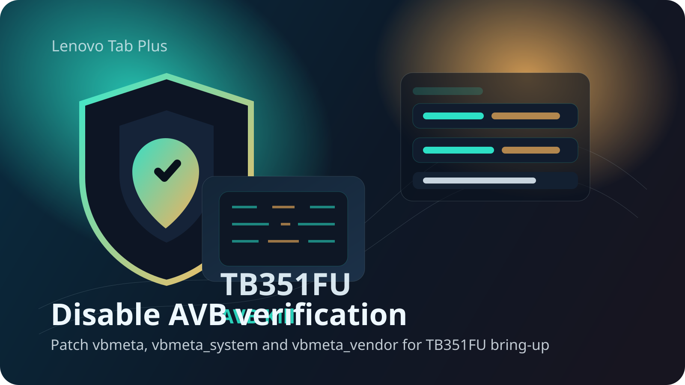
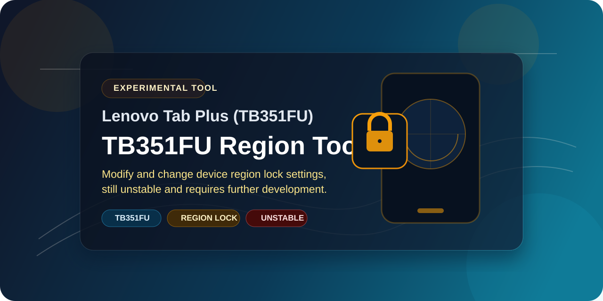

Lenovo Tab Plus TB351FU
Lenovo Tab Plus TB351FU resources in one place.
Use this page to find the current bootloader unlock tools, firmware helpers, download links and development status for the Lenovo Tab Plus TB351FU. If you are testing, flashing or building for this device, start here.
Custom Device Artwork

LineageOS
Released
LineageOS is ready to use and available for download. Security Patch: July
Kernel
WiP
Kernel compilation under development for custom ROM.
Current Projects
Four repos are ready to use right now
These are the main public repos for TB351FU work right now. They cover the bootloader route, AVB and verification bypass work, region lock modification, and Lenovo firmware prep.

Bootloader Unlock
Bootloader unlock steps, token handling and verification notes for people working from Linux on the Lenovo Tab Plus TB351FU.
- Device-specific unlock token generation.
- Guidance around the required auth and flash assets.
- Relock without data format using
one_click_relock.py(ensure mods/root are reverted first).

Lenovo Flash XML Helper
Utility for decrypting Lenovo firmware metadata and preparing a cleaner SP Flash Tool package for TB351FU restores, testing and device-side work.
- Decrypts Lenovo
.xfirmware metadata. - Checks the XML structure and referenced image files.
- Builds a flash-ready
sp_flash_tool_bundle/. - GUI support is currently being added for easier usage.

TB351FU AVB Kill
Standalone patcher for TB351FU AVB images. It modifies
vbmeta, vbmeta_system and
vbmeta_vendor so boot verification checks can be
disabled during bring-up, recovery work and custom
modification testing.
- Patches the three required AVB-related vbmeta images.
- Includes a simple fastboot install script for flashing.
- Useful when modified partitions trigger AVB verification failures.

TB351FU Region Tool
A utility that allows users to change the device region lock on the Lenovo Tab Plus TB351FU.
- Change device region lock settings.
- Status: Still unstable/experimental.
- Needs other developers to fix/improve if needed.
Development Status
Recovery is active and LineageOS is ready to use
OrangeFox Recovery and LineageOS Beta custom OS are now ready to use. Download links are given below.
Custom Recovery
OrangeFox Recovery is now available for the TB351FU. Note that this is an early build with known issues. It is intended for users who want to flash decryption scripts or for developers looking to contribute to the bring-up.
- Touch Screen: Not working. Use Volume buttons or a USB OTG mouse to navigate.
- Encryption: Internal storage is inaccessible due to Android encryption.
- Storage Access: Formatting Data will allow access, or you can try flashing a decryption script.
- Warning: Flashing decryption scripts may prevent the device from booting; use with caution.
Initial build (17.5.10.073_stable) is public. Recommended -> Lineage Recovery.
Open Recovery Tree
Current TWRP/OrangeFox device tree used for TB351FU recovery.
Download OrangeFox
Public recovery build (OrangeFox-tb351fu.img). See notes above.
Download Lineage Recovery
Alternative recovery build for LineageOS compatibility.
View Lineage Recovery Changelog
Working
- Fixed fastboot usb bug
- fixed installation of gsi images
Custom OS
LineageOS is now ready to use and available for download! Please note that this build will always remain unofficial as it includes proprietary third-party integrations like Dolby and Game Assistant. Download links are available below.
Current ROM: LineageOS (Android 16). Fully functional — download it now via Mega.nz or Telegram. ⚠️NOTE⚠️: USE AVB Disable script before proceeding.
⌛ First Boot: Initial boot may take 4–5 minutes. This is normal — please do not interrupt the process.
Known Issues & Notes
Stylus Pen
- Button bug: Pressing the stylus button activates the eraser mode in Nebo and it may stay stuck there. To return to draw mode, double-press the button or hold it for ~5 seconds. A temporary workaround is to disconnect Bluetooth and reconnect.
- Offline Charging & battery charge capping: Disabled / not functional in this build (will be fix in later build).
- Palm Rejection: Supported and working.
System
- Play Integrity: Use magisk module to resolve.
- GApps & Stock Rom Apps: Gapps basics included in this build. Stock Apps like pen, Nebo, Myscript and Game assistant inlcuded.
Disclaimer: This build is provided as-is, without any warranty, express or implied. By downloading and flashing this ROM, you acknowledge that you do so entirely at your own risk. The developer assumes no liability for any damage, data loss, or malfunction that may result from its use. Your device warranty may be affected. Proceed only if you understand and accept these terms.
View Installation Guide
Path A — Coming from Stock Recovery
- Reboot into stock recovery.
- Enter Fastbootd mode (not Bootloader/Fastboot — select Enter Fastbootd).
- Connect your PC via USB.
- Flash only
vendor_boot.imgfrom the ROM folder. - Power off the device, or reboot back into recovery via bootloader or from the system. Do not select “Reboot to Recovery” from the stock Fastbootd menu.
- Once in Lineage Recovery, perform a Factory Reset (wipe data).
- Go to Fastbootd mode again.
- Run
./flash.shfrom the ROM folder on your PC. — This flashes all required partitions. - Reboot and enjoy LineageOS.
Path B — Already on Lineage Recovery
- Reboot into Lineage Recovery.
- Perform a Factory Reset (wipe data) first — do this before flashing any images.
- Enter Fastbootd mode from recovery.
- Connect your PC and run
./flash.shfrom the ROM folder. - Reboot and enjoy LineageOS.
⚠ Important: Always factory reset before flashing custom images to avoid boot issues.
Restore to Stock
- Enter Fastbootd mode or use SP Flash Tool.
- Flash
super.imgfrom the stock firmware. - Format data (required) before booting back into stock firmware.
Open Device Tree
LineageOS-targeted TB351FU device tree with board config,
fstab, DTBO and product wiring for bring-up.
Open Kernel Tree
Lenovo-source-based TB351FU kernel tree adapted for custom
development and ROM compatibility work.
Open Vendor Tree
Public vendor definitions for TB351FU. Proprietary blobs are
intentionally excluded from the repo.
Download from Mega.nz
Download the LineageOS A16 build directly from Mega.nz.
Download from SourceForge
Download the LineageOS A16 build directly from SourceForge.
Download via Telegram Chat
Join the Telegram chat to download the LineageOS A16 Beta builds.
Links
Downloads, pages and public profiles
The links below collect the main public pages for this project, along with file hosting and the placeholders that will be updated as more channels go live.
Project links
What will you find here
- Current public tools for Lenovo Tab Plus TB351FU work.
- Status updates for recovery and LineageOS Beta releases.
- Download, profile and community links in one place.
- Visible placeholders for pages that will be added later.
About
Hi, I'm Pratik Gondane.
I am a computer engineer with a diploma in Computer Engineering, a B.E. in Computer Science and Engineering, and an M.Tech. in Computer Science and Engineering. Most of my work sits around Android internals, Linux systems and understanding devices at a lower level.
I build and share tools that make TB351FU development easier, from unlock workflows to firmware prep and ongoing bring-up work. This site exists to keep the useful links, tools and project status in one public place. If you need to reach me directly for something useful, mail me at hellopratik@proton.me .